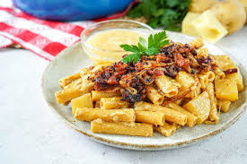

Pratos Típicos
Fondue de Queijo
Com certeza este é o prato mais lembrado quando se fala em Suíça, sendo o de queijo, normalmente preparado com os queijos Gruyère, Vacherin ou Appenzell. Com os queijos já ralados adicionar somente o vinho branco, noz moscada e pimenta. O fondue é feito na “Caquelon”, uma panela de cerâmica. O fondue é acompanhado por pão e batata.
Rosti
A Batata Rosti Pode ser misturado com queijo, bacon e ainda ser servido com um ovo frito. Como acompanhamento você pode ter carnes e salsichas.
LUZERNER CHÜGELIPASTETE

O Chügelipastete é feito com massa folhada, recheado com carne de vitelo e linguiça de porco, com um molho de cogumelos, creme de leite e vinho branco (ou suco de maçã). Pode ser acompanhado com legumes ou arroz.
ÄLPLERMAGRONEN
O Älplermagronen é um prato típico dos alpes suíços. Ele é preparado com macarrão, batata, creme de leite e queijo. Dependendo da região, também são adicionados presunto ou bacon e para acompanhar vem uma compota de maçã que você mistura ao Älplermagronen.